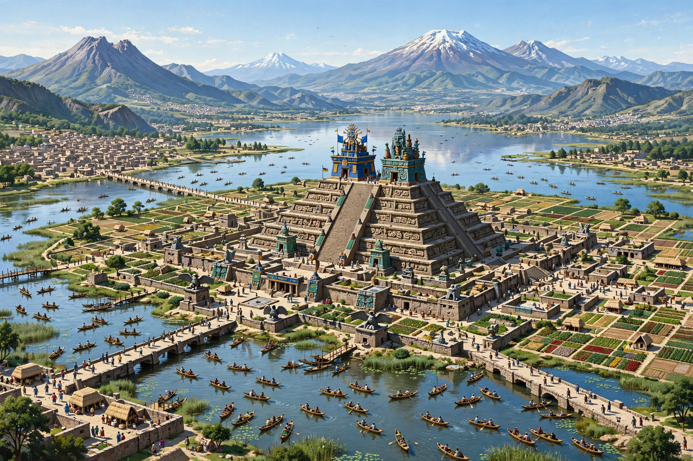

From Wikipedia, the free encyclopedia
| Aztecs | |
 Reconstruction of Tenochtitlan and the Templo Mayor | |
| Capital | Tenochtitlan (founded 1325) |
| Common languages | Classical Nahuatl |
| Religion | Aztec religion (polytheistic) |
| Government | Triple Alliance (1428–1521) of Tenochtitlan, Texcoco and Tlacopan |
| Historical era | Postclassic Mesoamerica |
| Fall | Spanish conquest, 13 August 1521 |
The Aztecs were a Mesoamerican culture that flourished in central Mexico in the post-classic period from 1300 to 1521. The Aztec peoples included different ethnic groups of central Mexico, particularly those groups who spoke the Nahuatl language and who dominated large parts of Mesoamerica from the 14th to the 16th centuries. Aztec culture was organized into city-states (altepetl), some of which joined to form alliances, political confederations, or empires. The Aztec Empire was a confederation of three city-states established in 1427: Tenochtitlan, city of the Mexica or Tenochca; Texcoco; and Tlacopan.
The Mexica founded Tenochtitlan in 1325 on an island in Lake Texcoco, at the site of modern Mexico City. By the early 16th century the city had perhaps 200,000 inhabitants — among the largest cities in the world at the time — with markets, causeways, aqueducts and floating gardens (chinampas). The empire extracted tribute in goods and captives from hundreds of subject towns across central and southern Mexico.
Nahua peoples migrated into the Valley of Mexico from the north, a journey mythologised in the Mexica migration story from the legendary Aztlán. After periods as mercenaries and tributaries of stronger powers, the Mexica under Itzcoatl formed the Triple Alliance in 1428 and rapidly expanded under rulers including Moctezuma I, Ahuitzotl and Moctezuma II. By 1519 the alliance dominated most of central Mexico, though it never conquered the Purépecha empire to the west or subdued Tlaxcala, an enclave of independent Nahua city-states.
In 1519 the Spanish expedition of Hernán Cortés landed on the Gulf coast and allied with Tlaxcala and other peoples subject to or hostile to the Mexica. After a period of occupation and violent expulsion from Tenochtitlan (the "Noche Triste", 1520), and ravaged by a smallpox epidemic, the city fell after a siege on 13 August 1521. The Aztec Empire was incorporated into New Spain; Nahua culture, language and communities nonetheless persisted through the colonial period to the present.
Aztec society was hierarchical. At the top stood the tlatoani ("speaker"), ruler of each city-state; below him the nobility (pipiltin) held land and office, while commoners (macehualtin) farmed, traded and served in war. Long-distance merchants (pochteca) formed their own guild-like organisations. Education was unusually universal for the period: children attended schools such as the calmecac (for nobles and priests) and telpochcalli (for commoners). The basic social unit was the calpulli, a ward that allocated land and organised labour and tribute.
Aztec religion was polytheistic and centred on gods including Huitzilopochtli (patron of the Mexica, god of sun and war), Tlaloc (rain), Quetzalcoatl (wind and wisdom) and Tezcatlipoca. Rituals, including human sacrifice — the scale of which remains debated among scholars — were understood to nourish the gods and sustain the cosmos, which in Aztec cosmology had passed through four previous "suns" or worlds. The Great Temple (Templo Mayor) of Tenochtitlan, dedicated jointly to Huitzilopochtli and Tlaloc, was rebuilt in successive phases. Time was tracked by a 365-day solar calendar and a 260-day ritual calendar, which interlocked in a 52-year Calendar Round marked by the New Fire ceremony.
The Aztecs spoke Nahuatl, today spoken by well over a million people in Mexico. They recorded tribute lists, genealogies, maps and religious texts in screen-fold books (codices) using a writing system combining pictorial and logographic elements, and composed elaborate poetry and oratory. After the conquest, Nahua scribes produced alphabetic texts in Nahuatl and Spanish that are now major sources for pre-conquest history.